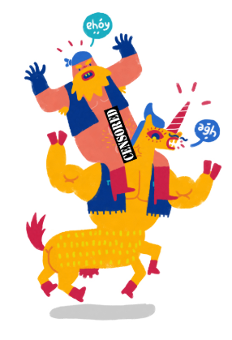

Ataberk Uran
June 8, 2020
Hypermasculine Unicorns of Anarchy
Hypermasculine Unicorns of Anarchy
Game made for Indies vs PewDiePie Game Jam in 2014. In the game you are playing with Slick the Unicorn. All the unicorns have been kidnaped by the evil church and the main character Slick is trying to save his friends from them. Slick teams up with the badass motorcycle gang that can harness the power from the magical unicorns and become so much more powerful. With the help of the cyclists, Slick is ready to save his friends.
This was my introduction to the game design. I was still a high schooler at the time with a passion for designing games. As soon as I heard about this Game Jam, I gathered couple of my friends and pitched my idea. Still being relatively new to designing games as well as Game Jams, we made many mistakes along the way. But we were able to finish the game with simplifying it. Along the way made many decisions. This being my first Game Jam I overshot the scope of the game and had to cut many things along the way. At the end we made a great job with finishing the game as simple as it was and submitted it.
Luckily for us, we made a good looking game with some interesting stuff in it which fit the theme of “Fun to Play” and got the attention of PewDiePie who was the organizator of the Game Jam. This being my first design test, I fell in love with designing games for people to play and enjoy their time. This game and the encouragement from PewDiePie himself, made me take the leap for game design and become the person I am today who is passionate about making games of all kind and making people have fun playing it.

comments powered by Disqus